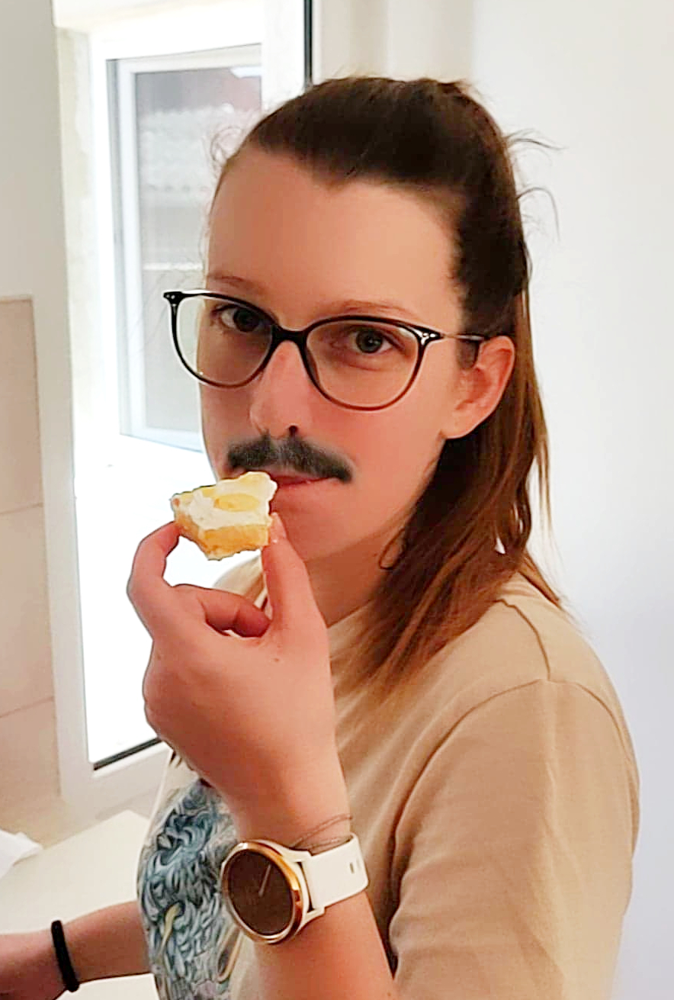

Hei
Azi e o zi speciala.
Este ziua...
lui
Papa Inocențiu al XI-lea
Dar maine...
Este ziua ta !!

Ai trait aproximativ
secunde.
Din care
au fost extra sexy.
Stiu cat de mult iti plac apusurile
Asa ca am facut asta